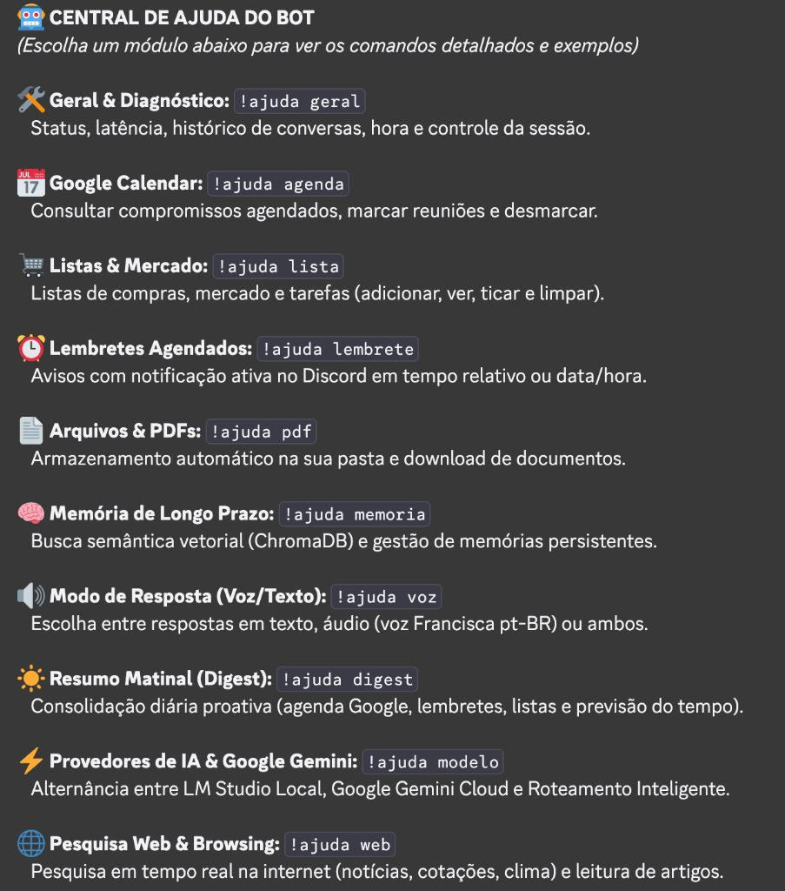
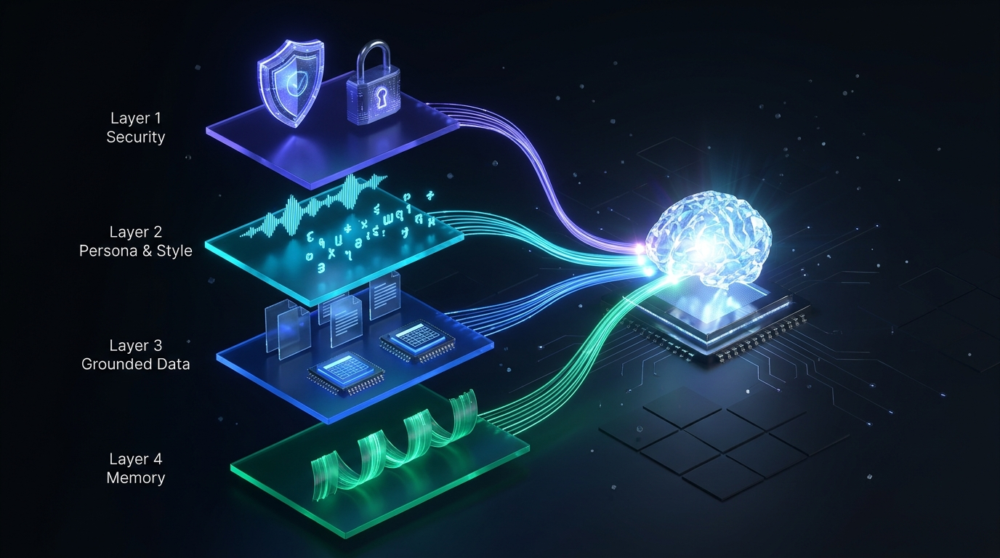

O Cérebro do Sistema: O Rápido vs O Inteligente
A regra fundamental: não desperdiçar inteligência artificial quando uma resposta direta resolve.
🚀 Resposta Direta
Instantâneo
34 Comandos Simples: Consultar agenda, anotações e lembretes respondem em milissegundos sem acionar IA.
✓ Latência quase zero • Sem custos • Agilidade máxima
🧠 Inteligência sob Demanda
Raciocínio Real
Perguntas Abertas: A inteligência artificial só entra em ação para interpretar textos, ler arquivos ou cruzar ideias.
✓ Raciocínio profundo • Pesquisa web • Memória contextual
📸 Central de Ajuda: 34 Comandos Diretos

Instruções em 4 Camadas Organizadas
Como preparamos a mente da IA para ela nunca se perder nem inventar:
🛡️ 1. Regras de Segurança
Limites Invioláveis
Blindagem contra prompt injection e ordens corporativas inegociáveis.
🎭 2. Estilo do Canal
Tom & Personalidade
Adaptação dinâmica do tom de voz para a comunidade e objetivo.
📄 3. Dados Reais (RAG)
Fatos Verificados
Conteúdo de notas e documentos reais garantindo zero alucinações.
💬 4. Memória da Conversa
Histórico Recente
Contexto contínuo sem repetições redundantes de mensagens.
🛡️ Pipeline de Prompt: 4 Camadas Estratificadas

A Caixa de Ferramentas sob Medida
Entregando para a IA apenas o que ela realmente precisa usar:
46
Ferramentas no Bot
Ler PDFs, busca web, calendário, lembretes e banco de dados.
3 a 4
Entregues por Vez
Filtro vetorial adivinha a intenção e isola apenas o necessário.
⚡ 80% de Economia de Processamento
Redução drástica no custo de tokens, menor latência de resposta e zero alucinação por excesso de opções.
🔍 Dynamic Tool RAG: 46 Ferramentas → 3 Selecionadas
Privacidade Total e Entrega sem Travamento
Blindagem técnica para uma experiência fluida, privada e segura:
🔒 Conversas Hermeticamente Isoladas
Contexto exclusivo por canal/usuário via
ContextVars; zero vazamento entre conversas.⚡ Execução Assíncrona em Background
Tarefas de CPU pesada e banco rodando em threads sem congelar o loop do Discord.
🚀 Fila Inteligente Anti-Spam (Leaky Bucket)
Despacho suave respeitando rate-limits; mensagens entregues limpas e prontas.
🔒 Concorrência Isolada & Fila Anti-Spam